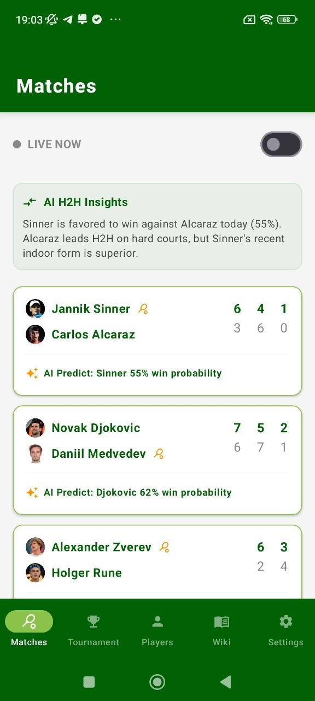
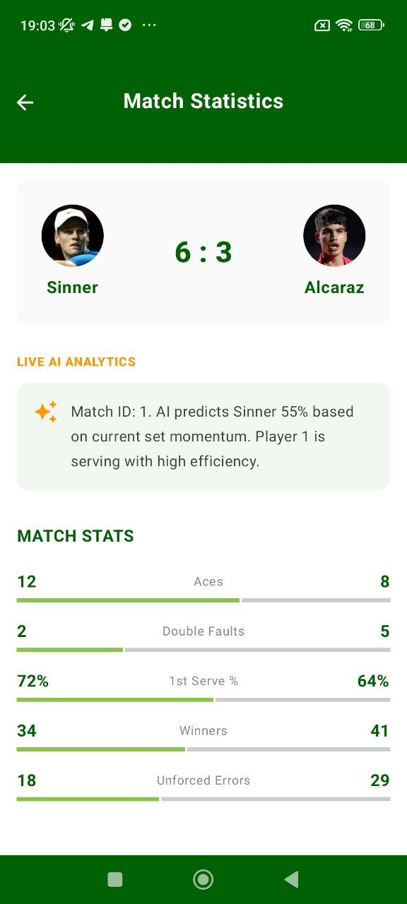
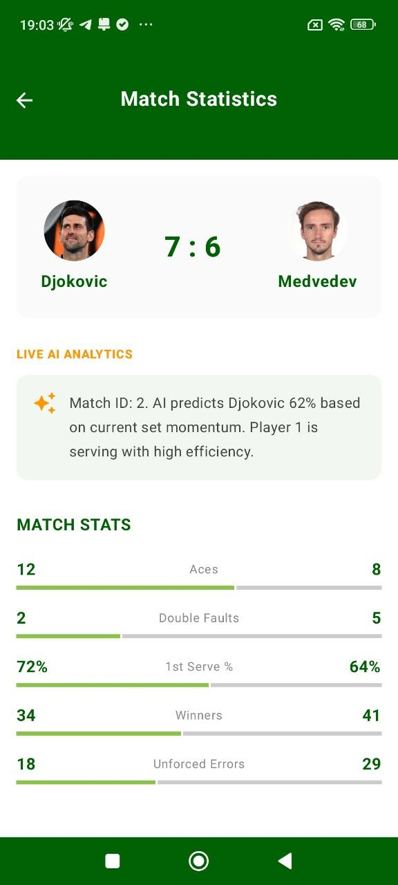

Premium tennis companion
Read the match. Track the momentum. Stay one step ahead.
Draft Match Statistics brings live scores, player rankings, tournament data, match analytics, encyclopedia guides, and clean visual insights into one polished mobile experience.



Product features
Built to feel sharp, fast and premium on every scroll
The app combines clean match tracking, informative player views, tournament navigation and educational content in a way that feels calm, modern and powerful.
Live match monitoring
Follow ongoing matches with current scorelines, momentum-style insights and clean visual separation between players.
Detailed player analytics
Explore rankings, age, titles, performance indicators and favorite management inside a streamlined player flow.
Tournament structure
Move from monthly tournament browsing to bracket details and event pages without friction or clutter.
Reference content
The built-in tennis encyclopedia and guide pages make the app useful even when you are not watching a live match.
Favorites and settings
Keep preferred players close, switch app preferences quickly and return to your own personalized flow anytime.
Clean tennis-first UI
The green system, strong contrast and spaced layout make the interface easy to read and feel more expensive.
Showcase
Five core screens. One strong visual system.
I used a tighter selection of screenshots so the page looks more curated and premium instead of overloaded. The result feels more like a real startup landing than a simple gallery.
Live match feed
Clear score cards and predictive insight blocks
Player detail
Biography, stats, ranking and performance summary
Tournaments
Brackets, calendar style browsing and event pages
Why it works
A landing page that sells clarity, trust and product depth
Match intelligence
Turn raw scoreboards into readable context
Not every sports app feels readable. This one stands out because score presentation, analytics blocks and player framing feel ordered instead of noisy.
Player discovery
Make the athlete pages feel useful, not empty
The player section gives the product a second life beyond live tracking. Rankings, favorites and stats make the user stay longer.
Retention layer
Wiki, settings and tournament browsing add stickiness
These support sections give the app more depth and make it feel like a complete ecosystem, not just a single-purpose tool.
Premium design direction
Designed like a polished product, not a rushed template
The page uses layered gradients, soft glass surfaces, moving light, parallax depth, floating devices, animated statistics and clean spacing so it feels more expensive and deliberate.
- Strong first-screen CTA with direct Google Play button
- Premium tennis color system with modern contrast
- Smooth scroll reveal and carousel motion
- Focused image usage without repeating everything
- Dedicated privacy page in the same visual language
0
core screens highlighted
0
premium feel
0
smooth motion points
0
clear download path
FAQ
Everything important in one place
The app focuses on tennis match tracking, player rankings, player profiles, tournament browsing, statistics and reference content inside one organized mobile interface.
Yes. The main CTA and repeated download buttons link directly to the Google Play page you provided.
No. The privacy page text below is preserved exactly as provided, with the styling improved around it.
Ready to install
Follow the match with more clarity
Open Draft Match Statistics on Google Play and keep tennis data, rankings, tournament views and live match context in one place.